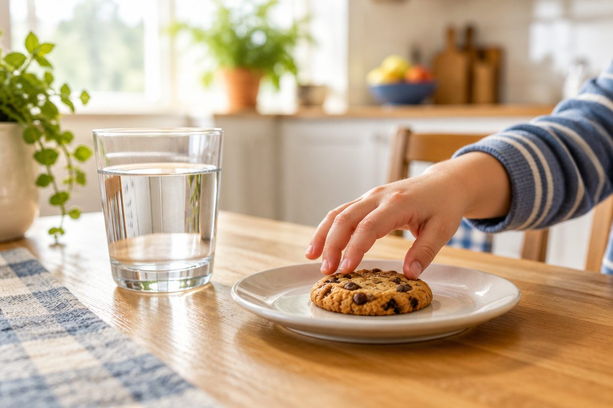

전체 단원 › 2학년 › 영어 › 3단계 · Can I ~? 부탁하기
"~해도 돼요?" 영어로 어떻게 부탁할까?

목이 말라요. 물을 마셔도 되는지 영어로 물어볼까요?
Can I ~?는 "~해도 돼요?"
무엇을 해도 되는지 물을 때 Can I ~?라고 해요.
Can I 다음에 하고 싶은 일을 말해요.
Can I go out? (나가도 돼요?)
이럴 때 써요
Can I go to the bathroom? 화장실 가도 돼요?
Can I sit here? 여기 앉아도 돼요?
Can I have a cookie? 쿠키 먹어도 돼요?
Can I have some water? (물 좀 마셔도 돼요?)
대답하는 방법
괜찮으면 Sure! 또는 Yes, you can.이라고 해요.
안 되면 Sorry, you can't.라고 해요.
Can I sit here? → Sure!
예쁘게 부탁해요
끝에 please를 붙이면 더 공손해요.
들어주면 Thank you!라고 말해요.
Can I have some water, please? → Sure! → Thank you!
핵심 낱말
- Can I ~?
- ~해도 돼요? 하고 허락을 구하는 말
- Sure!
- 그럼! 물론이지!
- please
- 부탁할 때 붙이는 공손한 말
꼭 알아야 할 표현
| Can I go out? | 나가도 돼요? | |
| Can I go to the bathroom? | 화장실에 가도 돼요? | |
| Can I sit here? | 여기 앉아도 돼요? | |
| Can I have a cookie? | 쿠키 하나 먹어도 돼요? | |
| Can I have some water, please? | 물 좀 마셔도 될까요? | please로 공손하게 |
| Sure! | 그럼! / 물론이지! | 허락할 때 |
| Yes, you can. | 응, 해도 돼. | 허락할 때 |
| Sorry, you can't. | 미안, 안 돼. | 안 될 때 |
| please | 부탁해요(공손하게) | [플리즈] |
| Thank you! | 고맙습니다! | 들어주었을 때 |
한 줄 정리
- Can I ~?는 "~해도 돼요?"예요.
- 허락은 Sure! / Yes, you can., 거절은 Sorry, you can't.
- please를 붙이고, 들어주면 Thank you!
학교 교육과정 연결 (미리 배우기)
- [4영02-08] 자기 주변 주제에 관한 담화의 주요 정보를 묻거나 답한다.
- [4영02-10] 의사소통 활동에 흥미와 자신감을 가지고 대화 예절을 지키며 참여한다.